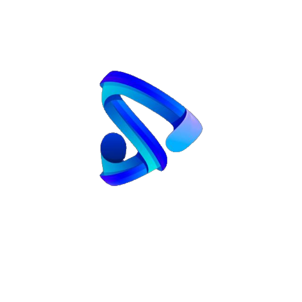

Avanço Tecnologico: Potencializando a Inovação na Era Digital
Nossa dependência em relação aos equipamentos tecnologicos para as tarefas do cotidiano já é tão forte que nem percebemos quando os utilizamos, o seu avanço permite trabalhos mais eficazes e uma redução de custos. Para que seus beneficios ocorram de forma eficiente um computador precisa ter tanto o software quanto o hardware funcionando bem para garantir um desempenho eficiente e confiável.
Quem somos?
Somos uma empresa de TI e outsorcing que visa parcerias em território brasileiro para atendimento de demandas de microinformática e telecom.
Prospecção de clientes e tecnicos de informatica
A prospecção de TI (Tecnologia da Informação) refere-se ao processo de identificar e abordar potenciais clientes ou oportunidades de negócios na área de tecnologia,trazendo como principal premissa o desenvolvimento e oportunidades.
Tendo isso em vista a Vexus IT faz prospecções ideais no modelo cliente x prestador de serviço.

Manter um negócio é um passo emocionante e desafiador, para a facilitação da distribuição de serviços é possivel empregar a terceirização de serviços, onde uma empresa contrata outra empresa especializada para realizar determinadas atividades ou serviços em seu nome.
Permitindo que se concentre em suas principais atividades e competências essenciais, direcionando seus recursos e energia para as áreas em que é especializada.
[VIDEO]Então é isso! Espero que você tenha gostado do nosso artigo com essa curiosidade sobre a Vexus IT.